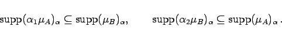
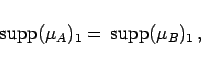
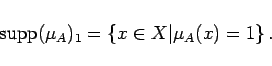
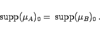

Inhalt Index DeskTop Bronstein

 Algebra und Diskrete Mathematik Fuzzy-Logik Grundlagen der Fuzzy-Logik Fuzzy-Mengen
Algebra und Diskrete Mathematik Fuzzy-Logik Grundlagen der Fuzzy-Logik Fuzzy-Mengen


|  | (5.365) |
|  | (5.366a) |
besitzen, da die Toleranz gerade gleich dem  -Schnitt einer Fuzzy-Menge in der Höhe 1 ist:
-Schnitt einer Fuzzy-Menge in der Höhe 1 ist:
|  | (5.366b) |
| (5.367a) |
|  | (5.367b) |